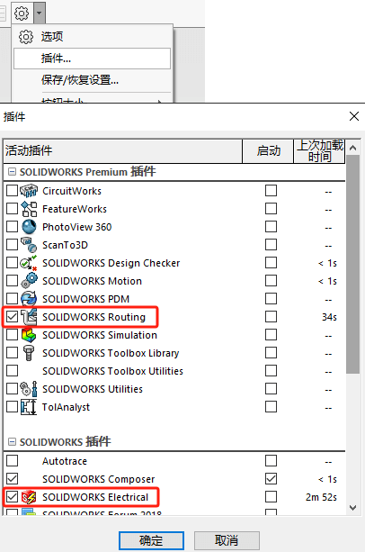

Electrical-3D教程
SOLIDWORKS Electrical 3D 是对 SOLIDWORKS 的补充插件工具，用于创建 3D 机柜布局和电线、电缆、线束布线。如果要使用这些功能，必须首先安装 SOLIDWORKS 的 Premium 版本。
1概述及界面介绍
打开插件
Electrical 3D作为插件工具，你需要先启动该插件。
创建装配体
布线用的装配体结构如下：一般会包括4个部分。
graph LR 装配体-->结构部件 装配体-->电气零件-->需要连接点属性等 装配体-->电线电缆部件或草图 装配体-->布线路径草图
启动插件后，在SW软件的右侧会有“电气工程图文件”的窗口。通过此处，外面可以打开SW Electrical2D里的工程文件。
在Electrical 3D插件里，需要通过右键工程【处理-SOLIDWORKS装配体】来创建用于布线的装配体文件，每个工程位置都会代表一个装配体
创建后，在设计树内会出现3个SW装配体图标，打开我们新建的装配体文件“Cabinet”。
补充说明：在处理创建布线装配体界面中，也可以选择链接装配体文件作为布线用。当然这个装配体文件的位置就是本身存在的已有位置，如果是按默认不选择，则是以空白装配体存放在“Project//<项目号/>/SOLIDWORKS/”内。
补充说明2：你还可以在SW Electrical 2D原理图内进行创建布线装配体操作，这和在原理图程序内操作是一样的
界面介绍

在操作布线过程中，我们也可以预览原理图去观察布线的连接情况，和3D布线做比较。
2机柜、线槽和导轨
graph LR 设计流程-->插入机柜-->插入导轨-->插入线槽-->配合定位-->修改线槽导轨长度
机柜、线槽、导轨等非连接的零部件添加方式有2种：
- 在SW Electrical 2D内添加（本次课程的方式）
- 在SW 装配体内添加，这部分是由结构设计负责操作。
添加机柜
可以在设备列表里右键机柜设备【插入来自文件】的方式，添加自定义的机柜。添加后列表文件会勾选表示已有模型在装配体内
添加导轨
可以在设备列表里右键导轨设备【插入水平导轨】的方式插入。将鼠标移至合适位置点击放置即可。因为有【配合参考】，导轨自动吸附在机柜面上。
添加线槽
配合定位
目前添加进装配体的线槽导轨是自由状态的，我们可以利用【装配体-配合】命令，将其对齐进行定位。
修改长度
修改导轨线槽长度，注意：导轨线槽是由专门的类型定义的，即“长度”这项是有专门属性控制的。
3电气零件制作
graph LR 设计流程-->打开零件-->打开电气向导-->创建连接点-->创建配合参考-->定义面-->完成
电气2D向电气3D转型，3D模型的电气属性定义，无疑是起到关键的“桥梁”作用。即如果在3D模型上体现2D原理图信息。本章将会通过【电气设备向导】工具，来制作电气零件。
电气零件向导
创建连接点
选择“来自制造商零件的连接点”类型创建，在SWE设备型号里选择预期的“回路”和“端子”即可（举例选“3极断路器”），这里选3回路6端子的设备型号。

选择连接点类型以【来自制造商零件的连接点】的方式来创建连接点。
【来自制造商零件的连接点】需要选择对应设备型号的回路和端子。不用具体型号，只需要回路数量和端子数量对的上即可。
如果绘制出错了，可有回到RLM电气设备向导里，进行编辑修改
点击模型位置，创建草图及其连接点
创建配合参考

在“对于轨迹”的配合参考里，选择设备在导轨里的顶部面和导轨正面即可。配合参考的面会被用于识别导轨零件上的配合参考面。这样就能达到预定义配合的效果。
完成零件的配合参考面后，在电气向导里“参考配合”就会多出一条名叫“TREWRAIL”的配合特征，即完成该操作。
创建定义面
该向导选项让您可以选择设备的曲面，以便将其定位在安装中。单击与四个可停靠面板区域对应的设备平面。定义面将有助于设备的定位【对齐设备】。在第4章#对齐设备内有演示说明。
完成
此对话框用于了解零件中是否缺少任何必要的项目，例如连接点和线路点
保存制作的零件（是可选操作）：完成后的零件，可有由此对话框用于保存零部件到步路库中，当然了，你后续手动复制到步路库也是可有的。
4插入设备
插入设备由多种方式：本次课程则以插入的方式进行演示。这个方式还有个前提，就是在原理图Electrical程序【设备型号管理器-设备属性-3D零件】需要设置关联模型路径。
- 插入:设备型号已关联对应模型
- 插入自文件:插入自定义的模型
- 关联:关联现有装配体的零件或者子装配体
导轨设备
原先课程3做好的【配合参考】，会在我们插入设备时，自动配合导轨。
门板设备
开孔设备的【智能零部件】特征使用。
- 有【智能零部件】设备会自动开孔并对齐；
- 无【智能零部件】设备需要手动同轴心配合，
端子排
右键设备端子排【插入端子】，将插入的端子放置到导轨上。因为有配合参考的关系，端子会自动吸附到导轨上进行配合。
放置完成后，软件会自动进入端子排插入的命令，此处会让你定义端子排方向以及间距。我们按默认设置插入端子排即可。
确认插入端子排后，模型会自动添加剩下的端子并排列对齐，并且设备树里的设备选项也会勾选，表示已添加到装配体内了。
对齐设备
对齐除了能排列设备间距外，还能绑定选择设备间距（即拖动对齐设备时，其他设备会同步被拖动）
5电线布线
布线路径
当没有线槽或布线路径时，自动布线的走向会以最短的距离布线（大概率会不符合现场情况）.因此我们需要绘制布线连路径来约束和引导布线走向。
创建布线路径。可以通过【创建草图】或使用现有的草图进行【转换草图】的方式，获得布线路径。默认会是黄色的颜色标识，你也可以手动修改。
回想下第2章我们的线槽，作为标准件的线槽模型，他是预先已经绘制了一段线槽内的线段草图（也就是“转换草图”方式做布线路径使用）。即这里我们只需要在离设备连接点比较远的位置绘制布线路径即可，如图：
使用了布线路径的样子布线规范有条理。
线路类型
- SOLIDWORKS Route：带线径的实体线，生成效果好
- 3D草图线：不带线径的草图线，生成速度快
布线设置
参数设置连接点和布线路径的识别参数：
- 两个布线路径之间的距离
- 连接点到第一个布线路径之间的距离
- 线路中电缆/电线的间距
6电缆布线
打开柜外布线装配体“EW_PUMP_TANK_PANEL_SUPPORT”，
关联零部件
在原本的装配体内，如果已经有设备模型，则可以选择【关联】的方式，让模型和原理图的设备关联使用
现在是关联好外部接线的设备了。打开总装文件“Pump Uint”将柜内“Cabinet”（设备L1）和柜外“Pump Building”（设备L2）放到总装配体文件内。
插入电缆接头
插入电缆接头“Cable_gland_14.SLDPRT”，用于辅助对接电缆线和端子排单线（作为中间辅助工作）。关键是电缆接头里有电缆连接点“EwCable”，

设置电缆起点终点该模型具有3条电缆线W1、W2、W3。我们需要去设置带有“EwCable”的起点终点设备（本次模型对应的是W1：电缆接头和电机；W2，3对应的是电缆接头和传感器）。
补充说明：其中我们需要留意的是电缆的“源设备连接点”和“终点设备连接点”。这是从电缆连接点“EwCable”接出去的下一个目标，即“EwCable”——>“Cpoint 0_0”。
绘制电缆
7布线错误分析
完成电线、电缆或线束布线过程后，布线分析对话框将列出所有错误或警告。单击 […] 可帮助您纠正错误。请参阅错误和警告列表上的可预览项。下面列举出常见项，其他的可见官方帮助进行检查。
未分配设备型号：设备树中所有未插入或未与SOLIDWORKS 3D 零件/装配体相关联的设备型号。解决方法： 插入或关联设备型号。
缺少电气连接点：电气零件的定义与 3D 零件的定义不匹配。SOLIDWORKS 零件中缺少连接点。解决方法：通过设备向导向 3D 零件添加缺少的设备连接点。
不正确的布线类型：如果插入至 3D 零件的非电气设备连接点与设备型号中的电气设备连接点定义相匹配，则会出现此情况。解决方法：编辑零件并更改设备连接点布线类型。
没有有效布线路径：电线或电缆不存在路径；或已定义 SOLIDWORKS 从/到零件，但自动布线功能无法找到有效路径；或避让设置阻止使用有效路径。解决方法：通过预览查看三色草图并识别缺少的路径零件。
8线束设计
电线的识别点是“Cpoint 0_0”连接点；电缆的识别点是“EwCable”连接点；线束的识别点是带电线连接点或电缆连接点的连接器零件。我们下面从原理图软件来创建线束并使用它。
插入连接器
先创建一份用于绘制线束的原理图纸，并修改图纸的说明属性为“线束原理图”。
在【原理图-插入连接器】创建用于线束识别的连接器符号。本次我们选择的是8pin的连接器型号。
符号属性默认
在插入动态连接器界面下选择“具有引脚符号的动态连接器”。
通过鼠标左键点击放置连接器符号到图纸任意位置。即完成连接器插入操作。

利用相同的操作将2个4pin的连接器也插入到图纸中，为连电线做准备
生成线束
在【原理图-绘制单线类型】选择4条单线,连接2个4pin连接器到8pin上.
框选连接器和电线,右键连接器[从线束田间/删除],来生成线束.
选择[新建线束]
见新建好的线束H1添加到刚刚的连接器原理图里.
完成添加后,退出[从线束添加/删除]
查看线束
线束布线
创建一个新位置来单独演示我们的[线束布线]
设备-修改连接器设备的位置，到刚才新建的“线束1”位置。
完成后，可以看到位置L3，已经有了3个连接器的设备

创建3D布线用的装配体
根据前面课程内容,打开”线束1”位置的装配体,并添加带有4pin和8pin的连接器进行设备[关联].然后绘制布线路径.
最后进行[绘制线束]布线,
平展线路
这里原本是可以展开的很漂亮的,但是我的不知咋回事展开比较难看就先不写了.你们可以看我的Routing笔记里的#平展线路那一章内容.
线束工程图
可以看我的Routing笔记里的#线束工程图那一章内容.
报表
可在菜单栏【工具-SOLIDWORKS Electrical-工程-报表】打开“报表管理器”。也可以在electrical插件窗口，右键工程打开（如图）。
报表管理器会显示”按线类型的电线清单”和”电缆清单”等.
Q%A
参考
工具栏
尽管 SOLIDWORKS Electrical 3D 中的大多数可用功能旨在创建 3D 布局和布线，但仍可以编辑端子排等工程数据、管理报表等。这些命令在 SOLIDWORKS Electrical 工具栏和 SOLIDWORKS Electrical 下拉菜单中分组。